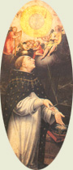
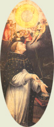

|  |
|---|
Textum Matriti 2007 a R. Wielockx editum
recognovit Enrique Alarcón atque instruxit

|  |
|---|

[88176] Adoro te deuote Te deuote laudo, latens ueritas,
te que sub his formis uere latitas.
Tibi se cor meum totum subicit,
quia te contemplans totum deficit.
Visus, tactus, gustus in te fallitur,
set auditu solo tute creditur.
Credo quicquid dixit dei filius,
nichil ueritatis uerbo uerius.
In cruce latebat sola deitas,
set hic latet simul et humanitas.
Ambo uere credens atque confitens,
peto quod petiuit latro penitens.
Plagas sicut Thomas non intueor,
deum tamen meum te confiteor.
Fac me tibi semper magis credere,
in te spem habere, te diligere.
O memoriale mortis domini,
panis uiuus uitam prestans homini.
Presta michi semper de te uiuere,
et te michi semper dulce sapere.
Pie pellicane, Ihesu domine,
me immundum munda tuo sanguine.
Cuius una stilla saluum facere,
totum mundum posset omni scelere.
Ihesu, quem uelatum nunc aspicio,
quando fiet illud quod tam sicio?
Vt te reuelata cernens facie,
uisu sim beatus tue glorie.